東京都吉祥寺の美容室M様の年2回 床面洗浄クリーニング定期清掃+天カセ3台の洗浄クリーニングを実施しました！
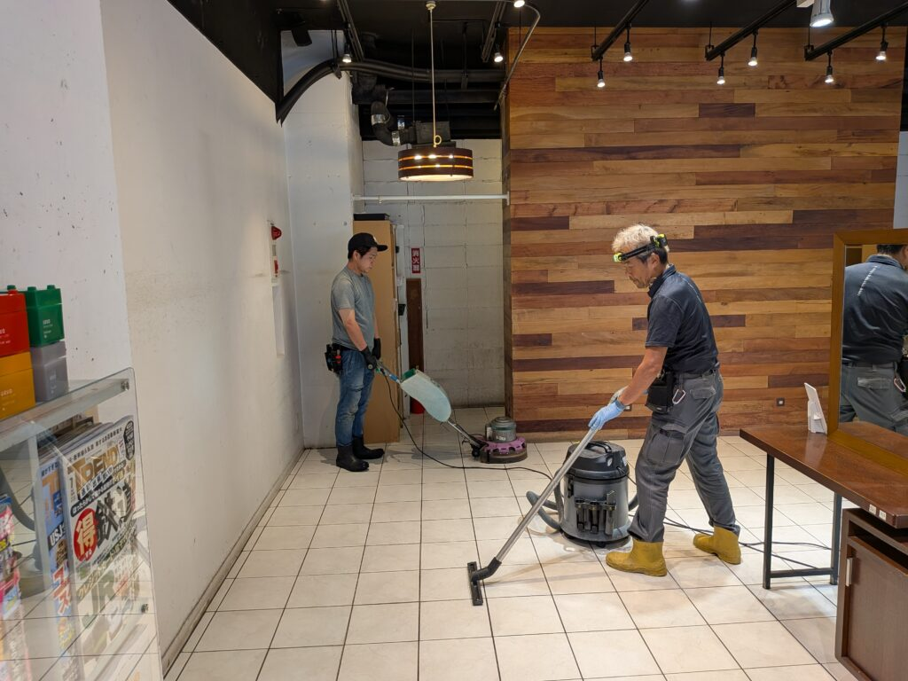
吉祥寺でおしゃれな美容室M様の年2回の床面洗浄クリーニング+天カセ3台の洗浄クリーニング定期清掃を実施しました！
M様の美容室はとてもおしゃれで綺麗な店舗なので、その綺麗な雰囲気がずっと続く様に、念入りに床面洗浄クリーニング、各家具や椅子、調度品のスキマや間のホコリ、髪の毛、各種汚れを徹底的に除去して磨き上げました。
天カセエアコン3台も、常にお客様で混み合うM様の店内を、綺麗でさわやかな冷風が出るようにしっかり内部洗浄クリーニングしました！真っ黒な汚水が大量に採取されて、すっかり綺麗になりました！ありがとうございました！
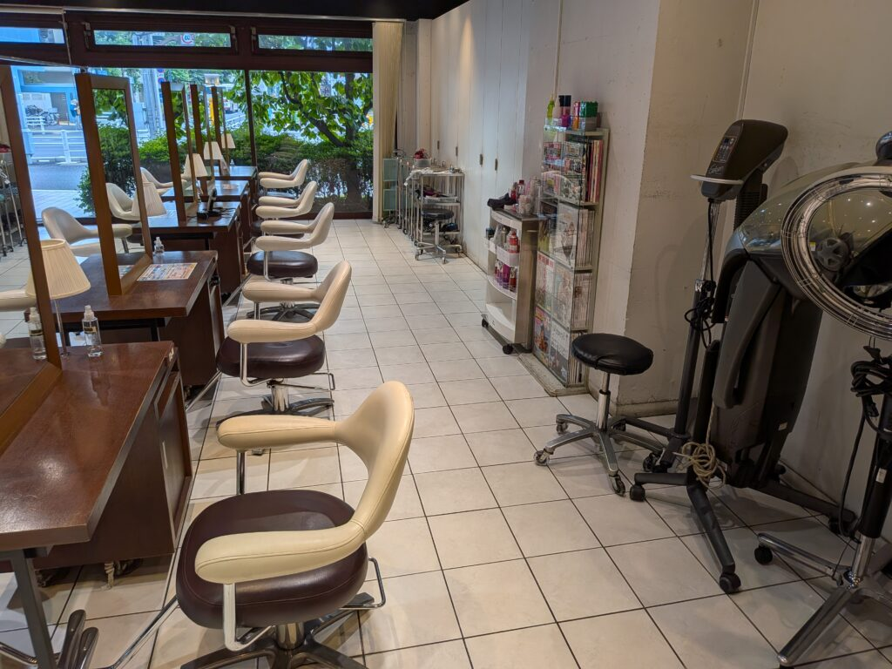
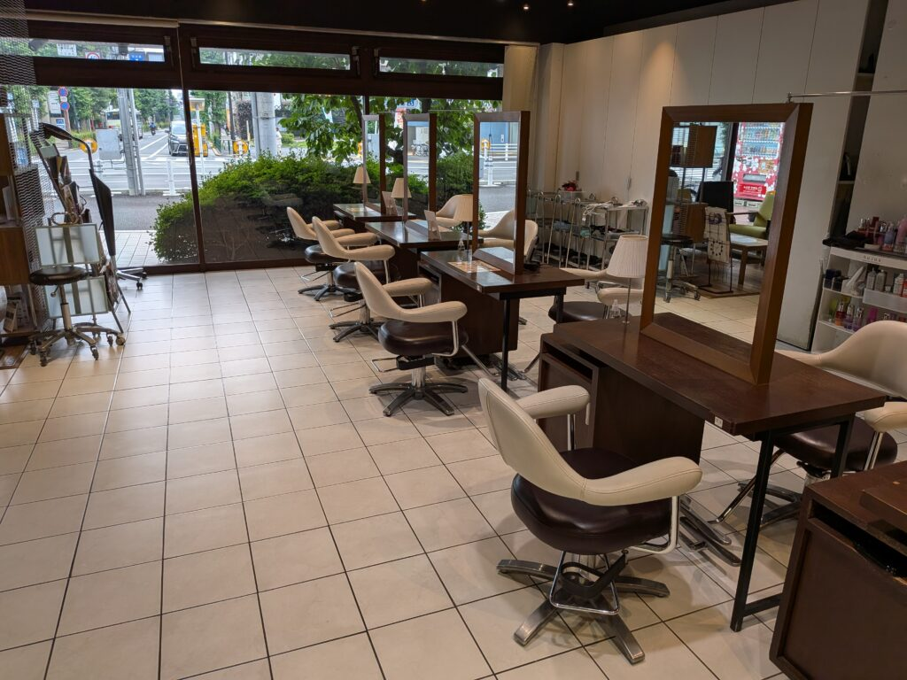
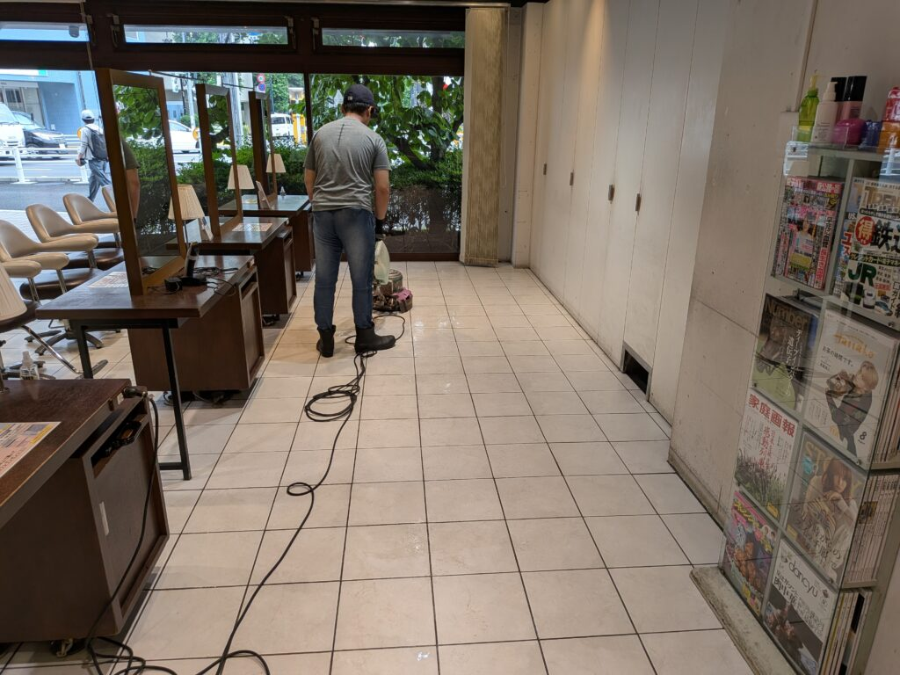
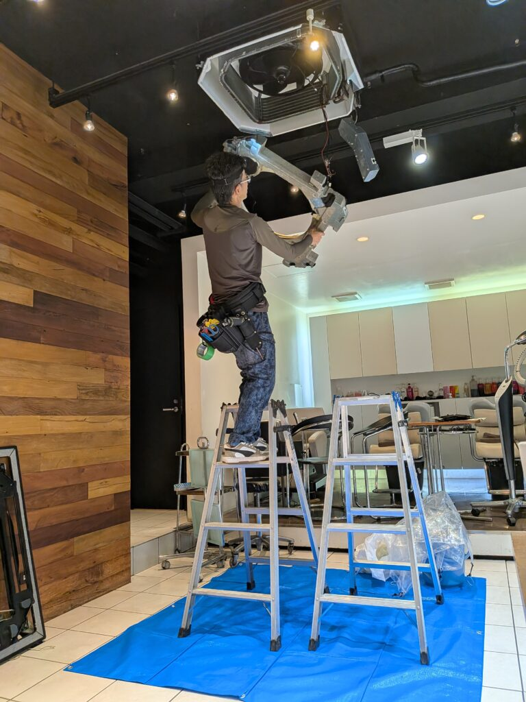
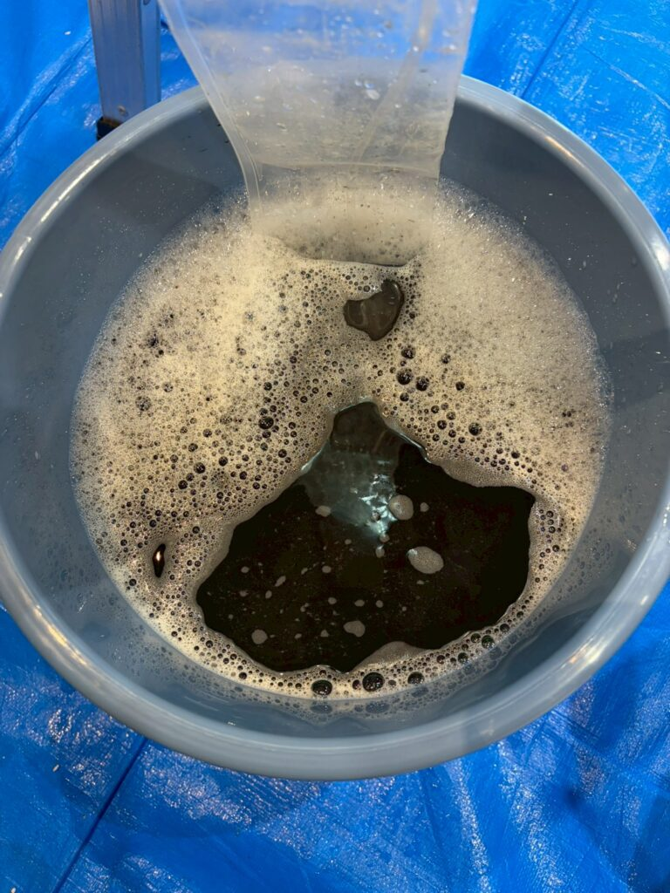
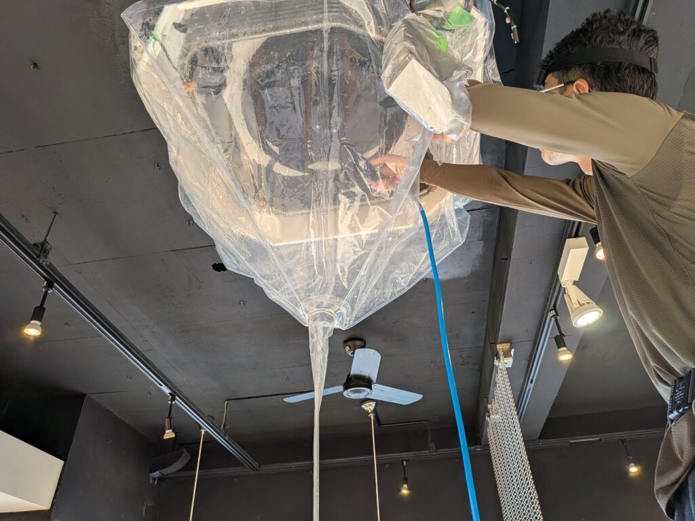
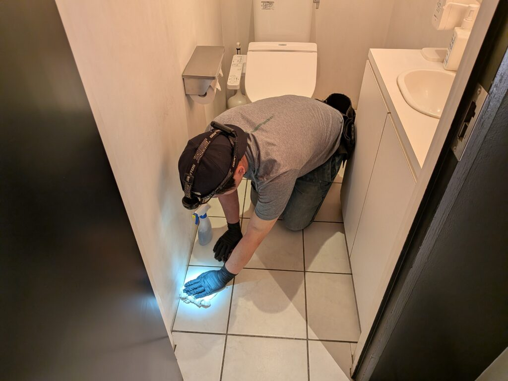
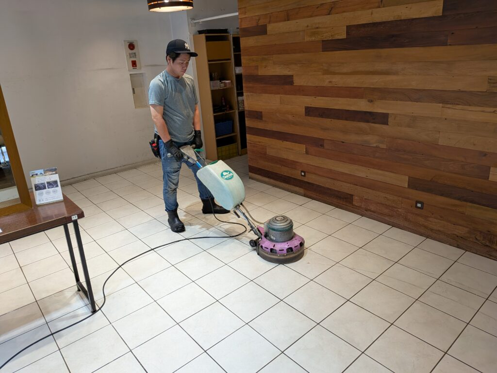
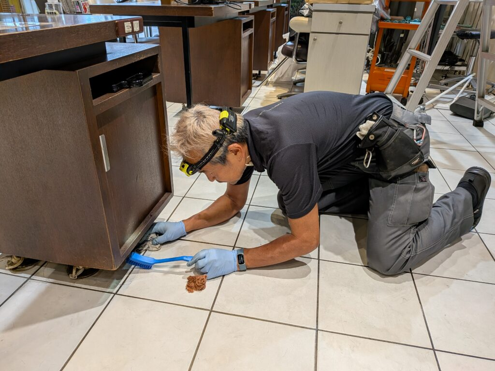
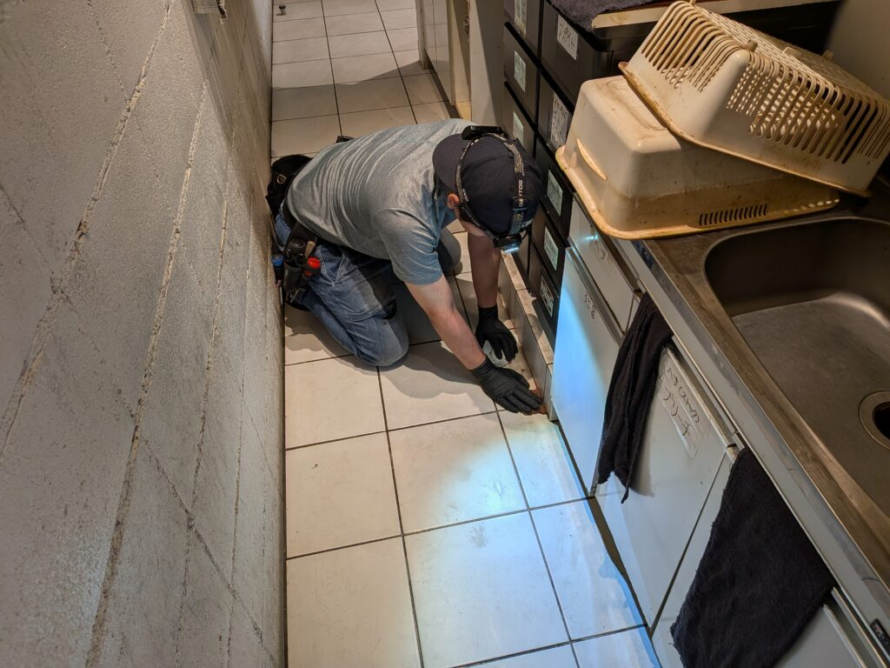
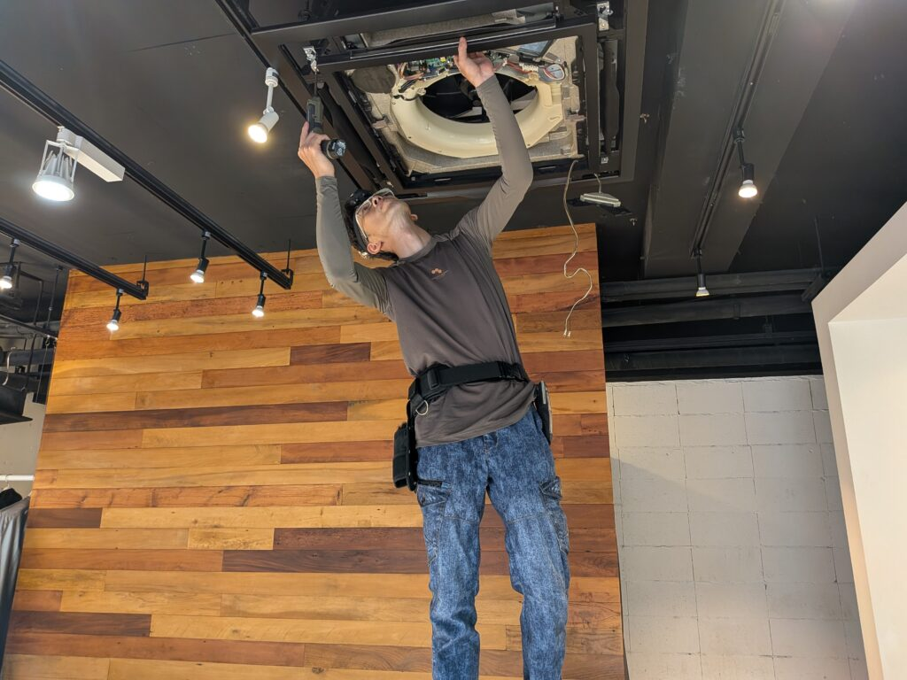
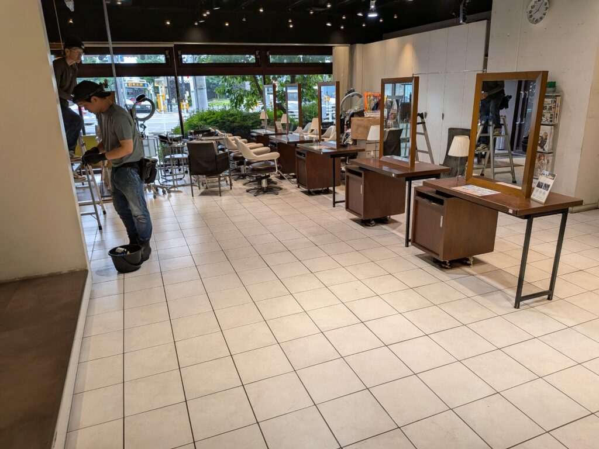